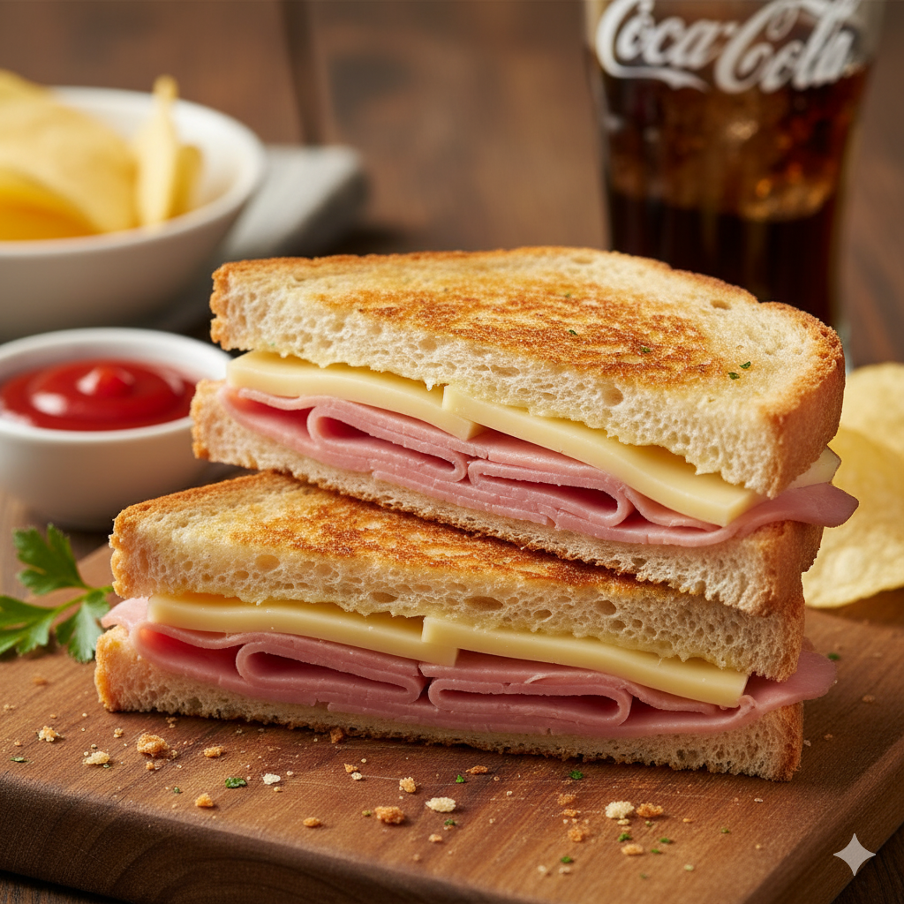
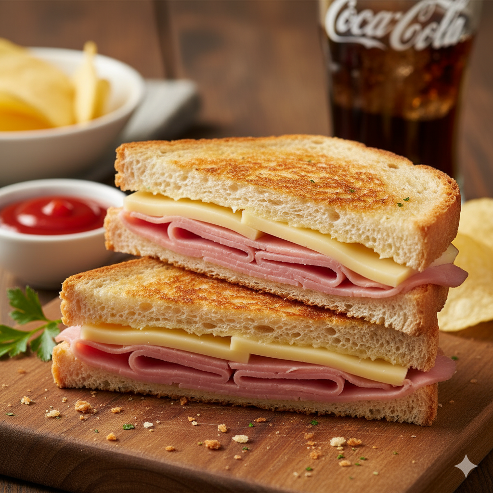
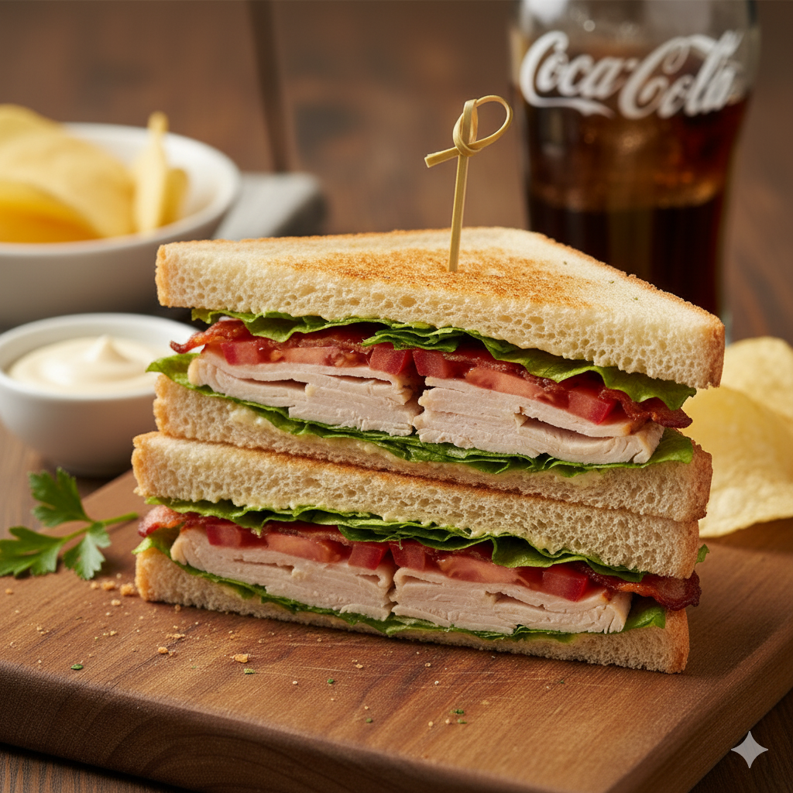
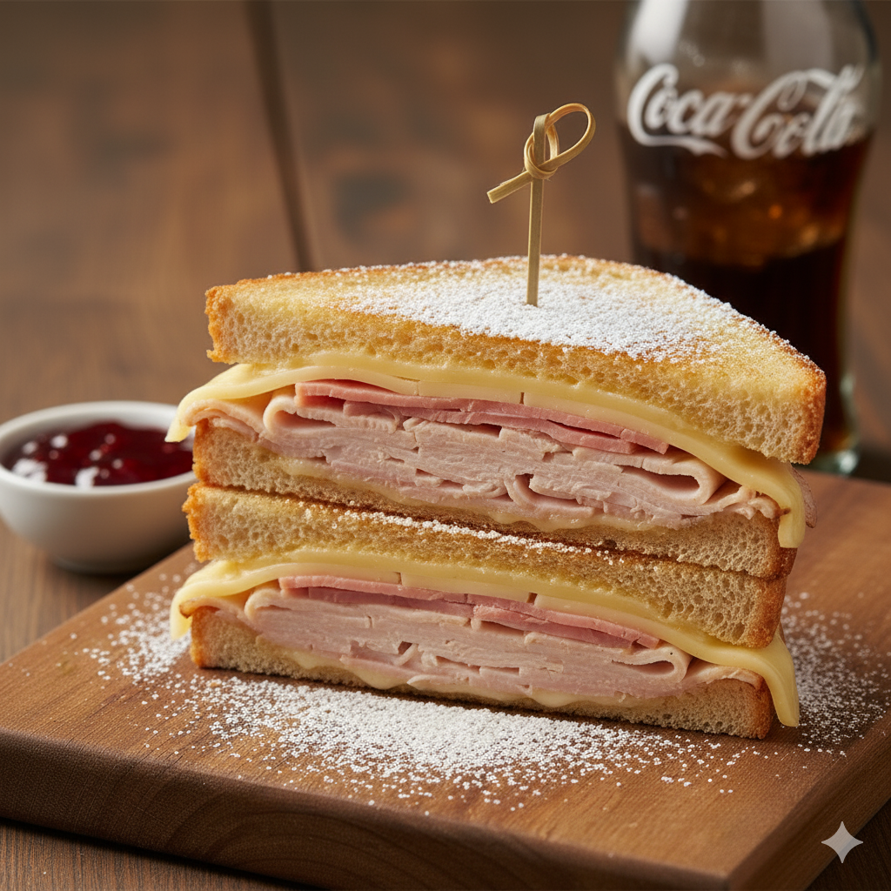
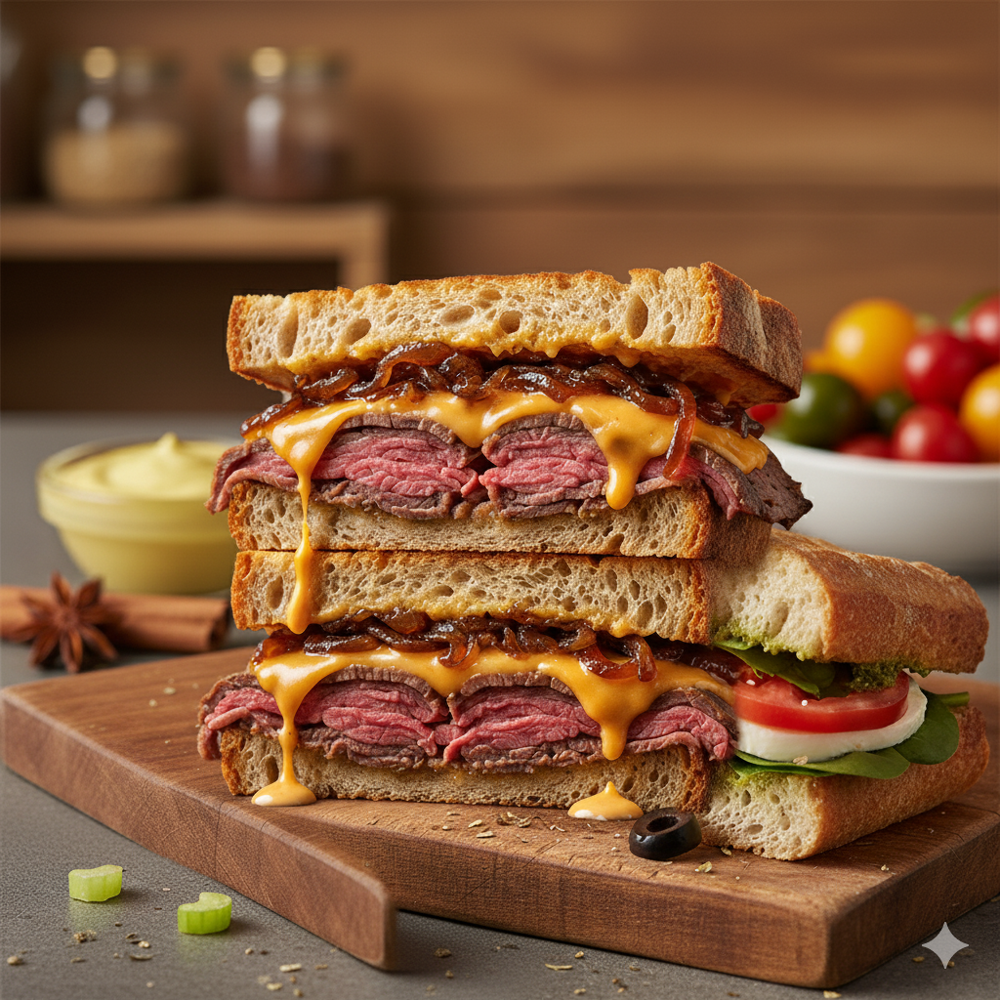
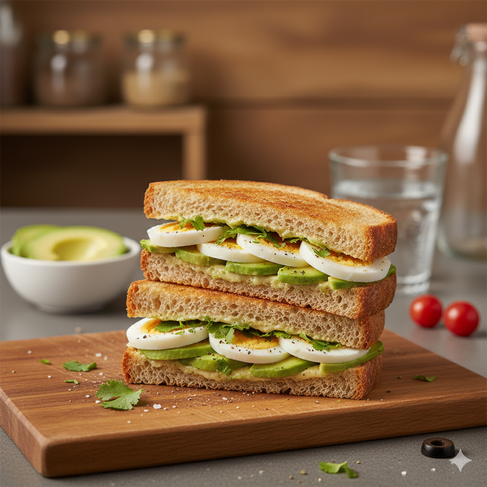
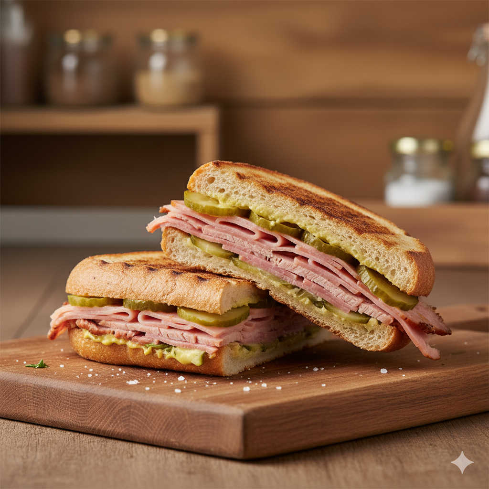

El Mixto
El tradicional de jamón y queso a la plancha.
Añadir pedidoEl Mixto
El tradicional de jamón y queso a la plancha.
Añadir pedidoSándwich Club "Americano"
El de pavo, bacon, lechuga y tomate
Añadir pedidoSándwich "New York"
El que lleva pastrami o carne curada y chucrut, al estilo Reuben
Añadir pedidoSándwich Vegetal Mediterráneo

El de pesto, tomate, mozzarella, espinacas y un toque de aceitunas.
Añadir pedidoSándwich de Pollo al Curry con Manzana

El de pan de centeno, relleno de una ensalada de pollo al curry con trozos de manzana crujiente, lechuga y un toque de mayonesa.
Añadir pedidoSándwich Cheddar y Cebolla
El de pan rústico, finas lonchas de roast beef, queso cheddar derretido y dulce cebolla caramelizada.
Añadir pedidoSándwich de Huevo y Aguacate
con pan tostado, huevo cocido en rodajas, aguacate fresco, un toque de cilantro y mayonesa ligera.
Añadir pedidoSándwich Cubano Clásico
El de pan cubano, relleno de cerdo asado marinado, jamón, queso suizo, pepinillos y mostaza. Calentado hasta que el queso se derrita y el pan esté crujiente.
Añadir pedido